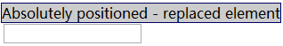
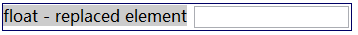
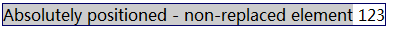
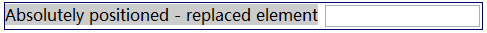

RD8025: 各浏览器对使用 shrink-to-fit 宽度的包含块中行内元素后的绝对定位元素的静态位置判断存在差异
标准参考
1、如果一个浮动元素或绝对定位元素的的 'width' 是 'auto'，并且它是一个非替换元素，那么它的宽度将会采用 shrink-to-fit 算法计算得出。
shrink-to-fit 的计算公式：min(max(preferred minimum width, available width), preferred width)
CSS2.1 并未给出 preferred minimum width、available width 和 preferred width 确切算法，通常，将内容中非明确的换行外的其他部分强制不换行来计算 preferred width；反之，尝试将内容尽可能的换行，以得到 preferred minimum width；available width 即该元素的包含块的宽度减去 'margin-left'，'border-left-width'，'padding-left'，'padding-right'，'border-right-width'，'margin-right' 的值以及任何存在的纵向滚动条的宽度。
关于浮动非替换元素宽度计算的详细资料，请参考 CSS2.1 规范 10.3.5 Floating, non-replaced elements 中的内容。
关于绝对定位非替换元素宽度计算的详细资料，请参考 CSS2.1 规范 10.3.7 Absolutely positioned, non-replaced elements 中的内容。
2、当绝对定位元素的 'top' 'left' 'bottom' 'right' 都为 'auto' 时，该元素的 'left' 'top' 值将使用其处于静态流位置中的定位值。
请参考 CSS2.1 规范以下章节中，对于绝对定位非替换元素和替换元素各自位置计算规则的第二条 ：
10.3.7 Absolutely positioned, non-replaced elements
10.3.8 Absolutely positioned, replaced elements
10.6.4 Absolutely positioned, non-replaced elements
10.6.5 Absolutely positioned, replaced elements
问题描述
当采用如下布局方法时，各浏览器可能会造成 shrink-to-fit 计算规则处理差异：
- 父元素采用浮动或绝对定位样式，宽度值为 'auto'；
- 子元素存在两个以上连续的行内元素；
- 两个行内元素之间存在空文本节点而非标记首尾紧密相连；
- 第二个行内元素采用绝对定位样式，且 'top' 'left' 'bottom' 'right' 都为 'auto' 。
此时，Safari 和 Chrome 中的父元素采用 shrink-to-fit 计算规则时，可能使用了 preferred minimum width 来作为 preferred width ，导致在空文本节点处产生换行，使依赖元素普通流位置的绝对定位元素显示位置产生差异。
造成的影响
可能会导致各浏览器中，页面局部布局存在差异。
受影响的浏览器
| Chrome Safari |
|---|
问题分析
根据问题描述中说明，构造以下代码：
<div id="A" style="float:left; border:1px solid #000066;">
<span style="background:#CCC;">float - non-replaced element</span>1
<span style="position:absolute">123</span>
</div>
<div style="clear:both"> </div>
<div id="B" style="float:left; border:1px solid #000066;">1
<span style="background:#CCC;">float - replaced element</span>
<input style="position:absolute" />
</div>
<div id="C" style="position:absolute; top:100px; left:10px; border:1px solid #000066;">
<span style="background:#CCC;">Absolutely positioned - non-replaced element</span>1
<span style="position:absolute">123</span>
</div>
<div id="D" style="position:absolute; top:150px; left:10px; border:1px solid #000066;">
<span style="background:#CCC;">Absolutely positioned - replaced element</span>1
<input style="position:absolute;" />
</div>
【注】：此处存在换行符，会产生一个空文本节点。
代码中分别使用浮动样式、绝对定位样式、自动宽度设置使父容器产生 shrink-to-fit 计算规则；行内子元素间使用换行符产生空文本节点，第二个子元素分别使用绝对定位替换和非替换元素来综合验证此情况。
实际各浏览器渲染结果如下：
| IE6 IE7 IE8 Firefox Opera | |
|---|---|
| float - non-replaced element |  |
| float - replaced element |  |
| Absolutely positioned - non-replaced element |  |
| Absolutely positioned - replaced element |  |
| Safari Chrome | |
| float - non-replaced element |  |
| float - replaced element |  |
| Absolutely positioned - non-replaced element |  |
| Absolutely positioned - replaced element |  |
上表数据表明，Safari Chrome 中按照 shrink-to-fit 计算规则计算父容器的实际宽度值时，由于两个行内元素间存在空白文本节点并且第二个元素定位参照其静态位置计算，导致出现 preferred minimum width 可能等于 preferred width 值的情况。
此处存在两个关键点需要一一证明其影响：
- 两个行内元素间的空白节点；
- 处于第一个行内元素之后的元素绝对定位是参照其静态位置的。
首先，解决两个行内元素间的空白节点问题。
将代码改成标记首尾紧密相连模式，不让他存在有可以换行的空文本节点，迫使 preferred minimum width 计算值与 preferred width 值相同：
<div id="A" style="float:left; border:1px solid #000066;">
<span style="background:#CCC;">float - non-replaced element</span><span style="position:absolute">123</span>
</div>
<div style="clear:both"> </div>
<div id="B" style="float:left; border:1px solid #000066;">
<span style="background:#CCC;">float - replaced element</span><input style="position:absolute" />
</div>
<div id="C" style="position:absolute; top:100px; left:10px; border:1px solid #000066;">
<span style="background:#CCC;">Absolutely positioned - non-replaced element</span><span style="position:absolute">123</span>
</div>
<div id="D" style="position:absolute; top:150px; left:10px; border:1px solid #000066;">
<span style="background:#CCC;">Absolutely positioned - replaced element</span><input style="position:absolute;" />
</div>
此时所有览器渲染结果均一致：
| IE6 IE7 IE8 Firefox Opera Chrome Safari | |
|---|---|
| float - non-replaced element | |
| float - replaced element | |
| Absolutely positioned - non-replaced element | |
| Absolutely positioned - replaced element | |
可见，preferred minimum width 计算值与 preferred width 值相同时，各浏览器处理不会产生差异。
然后，再观看依赖静态流位置定位的定位元素问题。
将原始代码中替换元素和非替换元素的绝对定位样式去除，此时 preferred minimum width 计算值会与 preferred width 值不同：
<div id="A" style="float:left; border:1px solid #000066;">
<span style="background:#CCC;">float - non-replaced element</span>
<span>123</span>
</div>
<div style="clear:both"> </div>
<div id="B" style="float:left; border:1px solid #000066;">
<span style="background:#CCC;">float - replaced element</span>
<input />
</div>
<div id="C" style="position:absolute; top:100px; left:10px; border:1px solid #000066;">
<span style="background:#CCC;">Absolutely positioned - non-replaced element</span>
<span>123</span>
</div>
<div id="D" style="position:absolute; top:150px; left:10px; border:1px solid #000066;">
<span style="background:#CCC;">Absolutely positioned - replaced element</span>
<input />
</div>
此时所有览器渲染结果均一致：
| IE6 IE7 IE8 Firefox Opera Chrome Safari | |
|---|---|
| float - non-replaced element |  |
| float - replaced element |  |
| Absolutely positioned - non-replaced element |  |
| Absolutely positioned - replaced element |  |
可见，当不存在依赖元素普通流位置的绝对定位元素时，即使 preferred minimum width 计算值与 preferred width 值不相同，各浏览器处理也不会产生差异。
综合以上分析，Safari 和 Chrome 中的父元素采用 shrink-to-fit 计算规则时，可能使用了 preferred minimum width 来作为 preferred width ，导致在空文本节点处产生换行，使依赖元素普通流位置的绝对定位元素显示位置产生差异。这种差异仅出现在父元素的某个子行内元素之后存在有空白文件节点，空白文件节点之后又存在依赖元素普通流位置的绝对定位元素时。
解决方案
建议在使用 ‘float’ ‘position:absolute' 这两个样式时，为 'width' 特性设置具体值。这样可以从根源上避免触发 shrink-to-fit 计算规则带来的差异。
参见
知识库
相关问题
测试环境
| 操作系统版本: | Windows 7 Ultimate build 7600 |
|---|---|
| 浏览器版本: |
IE6 IE7 IE8 Firefox 3.6.8 Chrome 7.0.517.5 dev Safari 5.0.2 Opera 10.62 |
| 测试页面: | absolute_and_shrink-to-fit.html absolute_and_shrink-to-fit_fix_1.html absolute_and_shrink-to-fit_fix_2.html |
| 本文更新时间: | 2010-09-15 |
关键字
shrink-to-fit float position Absolutely positioned static position replaced element non-replaced element preferred minimum width preferred width webkit Chrome Safari Empty text nodes